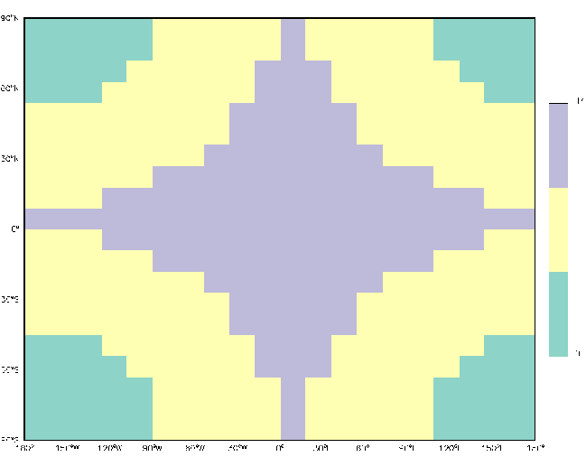
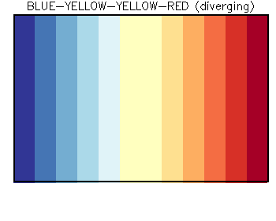

GAMAP v2–19 User Guide
Previous | Next | Printable View (no frames)


Most modern 32-bit color displays (e.g. PC & Mac) allow you to display several million gradations of color. However, for scientific visualization and plotting purposes, it is much easier to use a smaller subset of colors. For this reason, GAMAP was designed to use 256 colors. This means that GAMAP works equally well with 8-bit displays (e.g. X-Terminals), 16-bit displays, 24-bit displays (e.g. Sun/SPARC workstations) and 32-bit displays.
The main GAMAP color table routines are listed below:
| File Name | Description |
| idl_startup.pro | Startup script for IDL. This script calls the MYCT routine in order to define the color table that will be used at IDL startup. |
| cindex.pro | Displays the current colors in the color table with their index numbers overlayed on each color. Very useful for comparing color tables. |
| colorbar.pro | Draws a colorbar (legend) with labels. Some of the GAMAP plotting routines (e.g. TVMAP, TVPLOT, CTM_PLOT) will call COLORBAR directly to place a color bar below each plot panel. |
| colorbar_ndiv.pro | Returns the maximum number of colorbar divisions possible (up to a user-defined limit) such that tickmarks are placed in between colors. Can be used in conjunction with COLORBAR, or routines which call COLORBAR. |
| myct.pro | Loads either an IDL standard colortable (#0–39) or one of the ColorBrewer tables. You can also create customized color tables as well. |
| myct_define.pro | Defines the !MYCT system variable with default values. !MYCT is used to make colortable parameters available to the GAMAP's various plotting programs. NOTE: MYCT_DEFINE is called by MYCT. You probably will never have to call MYCT_DEFINE directly. |
We will describe these routines in more detail below.

3.2 Defining colortables with MYCT
MYCT is the main GAMAP color routine. It can be used to replace the current colortable with a new one, and possesses many features that make it more flexible than IDL's standard LOADCT command.
MYCT can be used to load one of several color tables (including the standard IDL color tables and the ColorBrewer tables; see Chapter 3.3 for more information). MYCT also defines some useful drawing colors (e.g. common colors such as red, blue, black, white, yellow, etc). that can be used to highlight lines and/or plotting symbols.

When you start IDL, MYCT will load a color table by default (cf Chapter 3.2.6). At any time during your IDL session, you may call MYCT to load a new color table.
MYCT stores its color table information in the file gamap2/colors/tables/gamap_colors.tbl. This file includes 130 tables (indexed from 0-129). They are all illustrated in this PDF document.
Color table # Description 0-40 Color tables that ship with IDL
41-58 Sequential ColorBrewer* color tables 59-67 Diverging ColorBrewer* color tables 68-125 Qualitative ColorBrewer* color tables 126-129 Custom color tables *Click HERE to view ColorBrewer license information
You can load a table at anytime interactively with the /X keyword:
IDL> myct, /x
This will open a dialog box that will allow you to pick a color table. You can pick & choose color tables until you find one that you like.
You can also specify a color table by its number (0-129) or its name when you call MYCT:
IDL> myct, 59 IDL> myct, 'rainbow'
Some special color tables (see Chapter 3.3) can also be specified with an IDL keyword:
IDL> myct, /WhGrYlRd IDL> myct, /BuYlYlRd
Every call to MYCT will update a system variable named !MYCT, which can be used to pass information about currently-loaded color table to GAMAP as well as any IDL programs that you have written. We will discuss how the !MYCT system variable works in Chapter 3.2.5.

3.2.2 Setting the number of colors in the color table
Each MYCT color table contains a pre-set number of colors. You can choose to override this default number of colors by supplying a new value via the NCOLORS keyword. For example
IDL> myct, /x, ncolors=6 IDL> tvmap, dist(20,20), /sample, /cbv
will pop open a dialog box to allow you to pick the color table with the number of colors that you have specified. The call to TVMAP creates a sample plot to display the color table that we have selected. In the plot below we have selected table #4 (Blue/Green/Red/Yellow) with 6 colors.
NOTE: The qualitiative ColorBrewer color tables (#68 - #125) disregard the NCOLORS keyword. The number of colors (which is stored in !MYCT.NCOLORS, as described in Chapter 3.2.5) will be exactly the number of colors that appears in the table name. For example, typing:
IDL> myct, 'set3', ncolors=6
will load the Set3 color table, which only has 3 colors. Therfore, these qualitative color tables can be directly used in GAMAP without further manipulation. Typing
will yield this plot with only 3 colors:IDL> tvmap, dist(20,20), /sample, /cbv


At any time, you may view the currently-loaded color table with GAMAP routine CINDEX (which stands for "color index"). For example, if you wanted to view the colors in the White-Green-Yellow-Red color table, you would type:
IDL> myct, /WhGrYlRd IDL> cindex
which would produce the following plot:
In the plot above, each color is printed, along with its corresponding color index number (i.e. the white numbers that are superimposed on each colored box).
You will notice that the bottom row of colors in the CINDEX plot does not correspond to the color table that you requested. MYCT reserves colors #0-17 for the "drawing colors". These are common colors like white, black, green, red, etc. that are intended to be used as the outline color of plot or map windows, or to denote plotting symbols. MYCT will always load these same drawing colors regardless of which other color table option we select.
MYCT then reserves colors #18 and onward for the color table that we have selected. In this example, the White-Green-e also referred to by the system variable !MYCT.BOTTOM. (We'll learn more about the !MYCT system variable in Chapter 3.2.5).Yellow-Red color table contains 20 predefined colors. Therefore, MYCT will reserve color indices #18 thru #37 for these colors. Color #18 is also known as the "bottom" color, and may b
In older versions of GAMAP (v2-11 and prior), the default MYCT drawing colors used to be brighter, as shown in this plot:
However, these brighter drawing colors tended to become "washed out" on the newer computer displays. Since GAMAP v2–11, we have redefined the drawing colors corresponding to the first plot shown above. However, for the sake of backwards compatbility, you can request the older, brighter drawing colors by calling MYCT with the /BRIGHT_COLORS keyword:
IDL> myct, /WhGrYlRd, /bright_colors
Here is a list of MYCT's standard drawing colors, plus the drawing colors that were defined in GAMAP v2–11 and prior versions:
Drawing
color #Default drawing colors
call with: MYCTGAMAP v2–11 and older versions
call with: MYCT, /BRIGHT_COLORS0 White White 1 Black Black 2 Red Red 3 Green Green 4 Blue Blue 5 Orange Yellow 6 Purple Magenta 7 Light Red Cyan 8 Light Green Light Red 9 Light Blue Light Green 10 Light Orange Light Blue 11 Light Purple Black 12 Gray 85% Gray 85% 13 Gray 67%
(aka "Dark Gray")Gray 67%
(aka "Dark Gray")14 Gray 50%
(aka "Medium Gray")Gray 50%
(aka "Medium Gray")15 Gray 33%
(aka "Gray", "Light Gray")Gray 33%
(aka "Gray", "Light Gray")16 Gray 15% Gray 15% 17 Undefined
currently set to "white"Undefined
currently set to "white"

3.2.4 Other useful MYCT keywords
Here is a list of several additional keywords to MYCT that you can use to customize your color table:
The /VERBOSE keyword tells MYCT to print information about the color table you just loaded:
IDL> myct, /WhGrYlRd, /verbose ... prints to the screen ... % Color table : WHITE-GREEN-YELLOW-RED (spectral) % Available Colors : 16777216 % Bottom for MYCT : 18 % NColors for MYCT : 20
The /REVERSE keyword lets you flip the color table ordering . In this example, the White-Green-Yellow-red color table will be reversed such that it starts with red and finishes with blue:
IDL> myct, /WhGrYlRd, /reverse IDL> cindex
The RANGE keyword lets you clip bottom/top of the initial color table, within 0-1:
IDL> myct, /WhGrYlRd, Range=[0.2, 0.8] IDL> cindex
The VALUE keyword lets you lower the brightness of the color table (0: darkest, 1: brightest). The default is 1.
IDL> myct, /WhGrYlRd, value=0.8 IDL> cindex
The SATURATION keyword lets you lower the color saturation (0: darkest, 1: brightest). The default is 1.
IDL> myct, /WhGrYlRd, saturation=0.5 IDL> cindex
Note: The /REVERSE, RANGE, VALUE, and SATURATION keywords take effect once a table is loaded. If you load a table interactively with the /X keyword, you will not see their effect until you call CINDEX or any display routine.
You will find more example and other keywords in the routine header. VALUE and SATURATION are the V and S from the HSV color space.

3.2.5 The !MYCT system variable
IDL system variables are special variables that are globally accessible to all routines at all times. These variables are essentially IDL structures that store many different pieces of data under different structure tag names. System variables begin with an ! character to denote that they are different from regular IDL variables.
When MYCT is called for the very first time (at the start of your IDL session), a new system variable named !MYCT is created (cf Chapter 3.2.6). !MYCT contains the individual colortable parameters that correspond to the currently-loaded color table. Every time you call MYCT to load a new color table, the !MYCT variable gets updated automatically with the settings pertaining to the new color table.
The advantage of defining the color table parameters in !MYCT is that the GAMAP graphics routines (e.g. TVMAP, TVPLOT, CTM_PLOT, COLORBAR, etc.) can obtain default colortable settings directly from this variable. Therefore, when you call the GAMAP plotting routines, you do not need to explicitly tell GAMAP how many colors are defined in the current color table, at which index the color table begins, etc.
!MYCT contains the following tag names:
MYCT tag name Description !MYCT.WHITE Index array for drawing color WHITE !MYCT.BLACK Index array for drawing color BLACK !MYCT.RED Index array for drawing color RED !MYCT.GREEN Index array for drawing color GREEN !MYCT.BLUE Index array for drawing color BLUE !MYCT.ORANGE Index array for drawing color ORANGE (not available with /BRIGHT_COLORS) !MYCT.PURPLE Index array for drawing color PURPLE (not available with /BRIGHT_COLORS) !MYCT.LIGHTRED Index array for drawing color LIGHT RED !MYCT.LIGHTGREEN Index array for drawing color LIGHT GREEN !MYCT.LIGHTBLUE Index array for drawing color LIGHT BLUE !MYCT.LIGHTORANGE Index array for drawing color LIGHT ORANGE (not available with /BRIGHT_COLORS) !MYCT.LIGHTPURPLE Index array for drawing color LIGHT PURPLE (not available with /BRIGHT_COLORS) !MYCT.YELLOW Index array for drawing color YELLOW (only available with /BRIGHT_COLORS) !MYCT.MAGENTA Index array for drawing color (only available with /BRIGHT_COLORS) !MYCT.CYAN Index array for drawing color (only available with /BRIGHT_COLORS) !MYCT.GRAY85 Index array for drawing color GRAY 85% !MYCT.GRAY67 Index array for drawing color GRAY 67% !MYCT.DARKGRAY Synonym for !MYCT.GRAY67 !MYCT.GRAY50 Index array for drawing color GRAY 50% !MYCT.MEDIUMGRAY Synonym for !MYCT.GRAY50 !MYCT.GRAY33 Index array for drawing color GRAY 33% !MYCT.GRAY Synonym for !MYCT.GRAY33 !MYCT.LIGHTGRAY Synonym for !MYCT.GRAY33 !MYCT.GRAY15 Index array for drawing color GRAY 15% !MYCT.FILE Name of the file containing color table information (e.g gamap_colors.tbl) !MYCT.NAME Name of the currently loaded color table !MYCT.INDEX Number of the currently loaded color table (0–129) !MYCT.BOTTOM Index where the color table begins. All colors below !MYCT.BOTTOM are the drawing colors. !MYCT.NCOLORS Number of colors in the color table (counting from !MYCT.BOTTOM onward). This value may be modified with the NCOLORS keyword. !MYCT.RANGE Range of the color table that will be displayed (default is [0,1]). This value may be modified with the RANGE keyword. !MYCT.SAT Saturation value of the color table (default is 1.) This may be modified with the SATURATION keyword. !MYCT.VALUE Brightness value for the color table (default is 1). This may be modified with the VALUE keyword. !MYCT.REVERSE =1 if the color table has been reversed; = 0 if not. This may be modified with the /REVERSE keyword.
Several of these tag names associate a drawing color with its appropriate color index (e.g. !MYCT.RED is color #2, !MYCT.BLUE is color #4). Others denote the number of colors, the colortable bottom, saturation, and hue values associated with the given colortable.
You can print the values of !MYCT to the screen with the following command:
IDL> myct, /WhGrYlRd IDL> help, !myct, /stru ** Structure <1eac9a08>, 33 tags, length=112, data length=108, refs=2: WHITE INT 0 BLACK INT 1 RED INT 2 GREEN INT 3 BLUE INT 4 ORANGE INT 5 PURPLE INT 6 LIGHTRED INT 7 LIGHTGREEN INT 8 LIGHTBLUE INT 9 LIGHTORANGE INT 10 LIGHTPURPLE INT 11 YELLOW INT 0 MAGENTA INT 0 CYAN INT 0 GRAY85 INT 12 GRAY67 INT 13 DARKGRAY INT 13 GRAY50 INT 14 MEDIUMGRAY INT 14 GRAY33 INT 15 GRAY INT 15 LIGHTGRAY INT 15 GRAY15 INT 16 FILE STRING '/home/bmy/IDL/gamap2/color/tables/gamap_colors.t'... NAME STRING 'WHITE-GREEN-YELLOW-RED (spec)' INDEX INT 128 BOTTOM LONG 18 NCOLORS LONG 20 RANGE FLOAT Array[2] SAT FLOAT 1.00000 VALUE FLOAT 1.00000 REVERSE INT 0
You may also use !MYCT directly at the IDL prompt or in any of your own IDL programs. For example, to overlay red points on top of a graph, type:
IDL> plot, findgen(100) IDL> oplot, findgen(50)*2, psym=sym(1), color=!MYCT.RED
which will generate this plot:

3.2.6 Specifying the default color table when you start IDL
From our discussion in Chapter 2.2, we saw that one of the things that the idl_startup.pro file does is to define the color table that is loaded at the start of an IDL session. This will be the "default" color table, and will remain selected until you call MYCT again to select a different color table.
Now that we know a little more about how MYCT works, let's look at the idl_startup.pro file in more depth. You will see these commands, prefaced by IDL comments.
; Load a custom spectral colortable (White-Green-Yellow-Red) if ( !D.NAME ne 'NULL' ) then MyCt, /Verbose, /WhGrYlRd ; Test if !MYCT was created before we reference it below DefSysV, '!MYCT', Exists=MYCT_Exists ; If we have loaded a MYCT color table, then the default background ; color will be white. Also set the default foreground color to black. if ( !D.NAME ne 'NULL' and MYCT_Exists ) then !P.COLOR = !MYCT.BLACK
The first command will cause the idl_startup.pro script to only call MYCT if the IDL display device supports interactive plotting. (The display device name is given by the !D.NAME field of the !D system variable.) Otherwise, MYCT will not be called. In this command, we also specify the default color table (here White-Green-Yellow-Red) that we would like to be loaded when IDL starts.. You may modify this line of code accordingly if you wish to specify a different color table.
The second command tests if the !MYCT system variable was created successfully. The result is saved in the variable MYCT_Exists, which is used in the command immediately below.
The third command will set the default background color to black. This will only happen if (1) the IDL display device supports interactive plotting, and (2) MYCT has already been called once (and the !MYCT variable has already been created). If you would like to specify a different default background color (e.g. !MYCT.BLUE, !MYCT.RED), you may modify this command accordingly.

3.3. Examples using the GAMAP color tables
Here we show some examples with the new GAMAP custom color tables.
As we learned in Chapter 3.2.3, colors #0 – #17 of each color table below denote the MYCT drawing colors. The actual color table begins at color #18 (a.k.a. !MYCT.BOTTOM).
All color tables here are shown with their original number of colors. You can manipulate each color table with the keywords described in Chapter 3.2.4.
We will use the ColorBrewer color abbreviations for color names:
|
Bk
= Black
|
Br
= Brown
|
Bu
= Blue
|
|
Gr
= Green
|
Gy
= Gray
|
Or
= Orange
|
|
Pi
= Pink
|
Pu
= Purple
|
Rd
= Red
|
|
Wh
= White
|
Yl
= Yellow
|
|
Note that some color table definitions were taken from the ColorBrewer package. License information as well as other references are listed below.

Diverging color tables typically have a middle neutral color (usually white or yellow), from which the colors on each side of the colorbar diverge. These are useful for creating difference plots, which have both negative and positive data points.
However, some diverging color tables were created without the middle neutral color. For example, the ColorBrewer Red-Blue table has 128 reds + 128 blues, but no neutral color, as shown by the following plot:
IDL> myct, 'RdBu' IDL> tvmap, dist(20,20), /sample, /cbv
For color tables such as these, MYCT can add the middle color with the /MIDCOLORPRESENT keyword. With an odd number of colors, the middle color saddles the center of the color bar as expected:
IDL> myct, 'RdBu', ncolors=7, /MidColorPresent IDL> tvmap, data, /sample, /cbv
If you are using an even number of colors, there is usually no middle color to show. Using /MIDCOLORPRESENT keyword will insert the middle color twice, once on each side of the middle of the bar.
IDL> myct, 'RdBu', ncolors=14, MidColorPresent IDL> tvmap, data, /sample, /cbv, div=3
NOTE: If you call MYCT with:
IDL> myct, /X, /MidColorPresent
Then you will not see the middle color displayed in the dialog box. The middle color is added after the color table has been loaded.
Here we shall examine some useful diverging color tables:

IDL> myct, /BuWhRd, /verbose
MYCT will print:
% Color table : BLUE-WHITE-RED (diverging) % Available Colors : 16777216 % Bottom for MYCT : 18 % NColors for MYCT : 27
Color index numbers (with drawing colors):
Color shade plot:
Note that the BLUE–WHITE–RED (27 colors) table tends to saturate at the maximum and minimum values. This may cause problems when converting to PostScript output, or when using a video projector. For this reason, we recommend using BLUE–WHITE–WHITE–RED instead.

3.3.1.2 BLUE—WHITE—WHITE—RED
(aka the "DIFFERENCE" color table)
IDL> myct, /BuWhWhRd, /berbose
or
IDL> myct, /DIFF, /verbose
MYCT will print:
% Compiled module : REVERSE. % Color table : BLUE-WHITE-WHITE-RED (diverging) % Available Colors : 16777216 % Bottom for MYCT : 18 % NColors for MYCT : 20
Color index numbers (with drawing colors):

Color shade plot:
The BLUE–WHITE–WHITE–RED colortable was constructed by concatenating the reverse of the WHITE–BLUEcolortable with the WHITE–RED colortable (see below). The 2 center colors are white, with 9 gradations of reds and blues (20 colors total). The 2 center white colors facilitate the alignment of colorbar tickmarks in between colors. Note that this colortable does not saturate at the minimum and maximum values as does Blue-White-Red. We recommend using this color table to create difference plots. (Also note, if you need to use white to denote "missing data" values, then please consider using the BLUE–YELLOW–YELLOW–RED.)

IDL> myct, /BuYlRd, /verbose
MYCT will print:
% Color table : BLUE-YELLOW-RED (diverging) % Available Colors : 16777216 % Bottom for MYCT : 18 % NColors for MYCT : 12
Color index numbers (with drawing colors):
Color shade plot:
The BLUE–YELLOW–RED color table contains 6 gradations of blues and 6 gradations of reds (12 colors total). However, there is no "center" color. Therefore, the BLUE–YELLOW–YELLOW–RED color table may be a better choice.

3.3.1.4 BLUE—YELLOW—YELLOW—RED
IDL> myct, /BuYlYlRd, /verbose
MYCT will print:
% Color table : BLUE-YELLOW-YELLOW-RED (diverging) % Available Colors : 16777216 % Bottom for MYCT : 18 % NColors for MYCT : 12
Color index numbers (with drawing colors):
Color shade plot:

The BLUE–YELLOW–YELLOW–RED table has 5 divisions of blues & reds separated by 2 yellow center colors (12 colors total). As with BLUE–WHITE–WHITE–RED, this facilitates placement of colorbar tickmarks in between colors. This is a good choice of difference colortable, particularly if you need to denote missing data values with white.

3.3.1.5 The DIAL/Lidar colortable
IDL> myct, /dial, /verbose
MYCT will print:
% Color table : DIAL/LIDAR (diverging)
% Available Colors : 16777216
% Bottom for MYCT : 18
% NColors for MYCT : 26
Color index numbers (with drawing colors):
Color shade plot:
The DIAL colortable was developed by Ed Browell for use in displaying lidar output data. It is a useful colortable for showing data with a large dynamic range. However, one bad feature is that extremely low values are rendered as purple. When using this color table to plot emissions over continents, then oceans or other places where no emissions exist will be rendered as pink & purple, which many people can find annoying. For this reason, we recommend using one of the other GAMAP color tables if you need to display data with extremely small values.
3.3.1.6 Other diverging colortables
Here is a list of the other diverging colortables that MYCT can load. Each of these color tables is plotted in this document.
Table # Name # of colors Description 16 Haze 234 IDL color table 16 59 PuOr 234 ColorBrewer color table: Purple ==> Orange 60 BrBG 234 ColorBrewer color table: Brown ==> Bluish green 61 PrGn 234 ColorBrewer color table: Purple ==> Green 62 PiYG 234 ColorBrewer color table: Pink ==> Yellow ==> Green 63 RdBu 234 ColorBrewer color table: Red ==> Blue 64 RdGy 234 ColorBrewer color table: Red ==> Gray 65 RdYlBu 234 ColorBrewer color table: Red ==> Yellow ==> Blue 66 Spectral 234 ColorBrewer color table: Red ==> Orange ==> Yellow ==> Green ==> Blue 67 RdYlGn 234 ColorBrewer color table: Red ==> Yellow ==> Green

These color tables run sequentially from one color to another (white to blue, white to red, blue to red via green & yellow, etc). Spectral color tables are best for displaying concentration data.

IDL> myct, /WhBu, /verbose
MYCT will print:
% Color table : WHITE-BLUE (spectral) % Available Colors : 16777216 % Bottom for MYCT : 18 % NColors for MYCT : 10
Color index numbers (with drawing colors):
Color shade plot:
The WHITE–BLUE and WHITE–RED colortables (10 colors) are suitable for plotting data which monotonically increases from zero to some maximum value (e.g. emission fluxes).

IDL> myct, /WhRd, /verbose
MYCT will print:
% Color table : WHITE-RED (spectral) % Available Colors : 16777216
% Bottom for MYCT : 18 % NColors for MYCT : 10
Color index numbers (with drawing colors):
Color shade plot:
The WHITE–BLUE and WHITE–RED colortables (10 colors) are suitable for plotting data which monotonically increases from zero to some maximum value (e.g. emission fluxes).

IDL> myct, /ModSpec, /verbose
MYCT will print:
% Color table : MODIFIED SPECTRUM (spectral) % Available Colors : 16777216 % Bottom for MYCT : 18 % NColors for MYCT : 11
Color index numbers (with drawing colors):
Color shade plot:
The MODIFIED SPECTRUM (ModSpec) color table contains 11 continuous color gradations from blue to red, with yellow in the center. ModSpec is very useful for creating plots in which you do not want to represent the lowest value with white (e.g. tracer concentrations).

3.3.2.4 WHITE—GREEN—YELLOW—RED
IDL> myct, /WhGrYlRd, /verbose
MYCT will print:
% Color table : WHITE-GREEN-YELLOW-RED (spectral) % Available Colors : 16777216 % Bottom for MYCT : 18 % NColors for MYCT : 20
Color index numbers (with drawing colors):
Color shade plot:
The WHITE–GREEN–YELLOW–RED has the first color index as white, with the remainder being 19 continuous gradations from blue to red. this is a good choice of color table for quantities which monotonically increase from zero to a maximum value.

IDL> myct, /WhGyBk, /verbose
MYCT will print:
% Color table : WHITE-GRAY-BLACK (spectral) % Available Colors : 16777216 % Bottom for MYCT : 18 % NColors for MYCT : 9
Color index numbers (with drawing colors):
Color shade plot:
WHITE–GRAY–BLACK is a grayscale colortable with 10 gradations from white to black. This colortable may not saturate as much as the standard IDL colortable 0.

3.3.2.6 Other spectral color tables
Here is a list of the other spectral colortables that MYCT can load. Each of these color tables is plotted in this document.
Several of the IDL color tables listed here are kind of funky (they have really bright colors or weird color separations). You may find that the ColorBrewer color tables do a better job of displaying your data.
Table # Name # of colors Description 0 BW-LINEAR 234 IDL color table 0 1 BLUE/WHITE 234 IDL color table 1 2 GRN-RED-BLU-WHT 234 IDL color table 2 3 RED TEMPERATURE 234 IDL color table 3 4 BLUE/GREEN/RED/YELLOW 234 IDL color table 4 5 STD GAMMA-II 234 IDL color table 5 6 PRISM 234 IDL color table 6 7 RED-PURPLE 234 IDL color table 7 8 GREEN/WHITE LINEAR 234 IDL color table 8 9 GRN/WHT EXPONENTIAL 234 IDL color table 9 10 GREEN-PINK 234 IDL color table 10 11 BLUE-RED 234 IDL color table 11 12 LEVEL 234 IDL color table 12 13 RAINBOW 234 IDL color table 13 14 STEPS 234 IDL color table 14 15 STERN SPECIAL 234 IDL color table 15 17 Blue + Pastel + Red 234 IDL color table 17 18 Pastels 234 IDL color table 18 19 Hue Sat Lightness 1 234 IDL color table 19 20 Hue Sat Lightness 2 234 IDL color table 20 21 Hue Sat Value 1 234 IDL color table 21 22 Hue Sat Value 2 234 IDL color table 22 23 Purple-Red + Stripes 234 IDL color table 23 24 Beach 234 IDL color table 24 25 Mac Style 234 IDL color table 25 26 Eos A 234 IDL color table 26 27 Eos B 234 IDL color table 27 28 Hardcandy 234 IDL color table 28 29 Nature 234 IDL color table 29 30 Ocean 234 IDL color table 30 31 Peppermint 234 IDL color table 31 32 Plasma 234 IDL color table 32 33 Blue-Red 234 IDL color table 33 34 Rainbow 234 IDL color table 34 35 Blue Waves 234 IDL color table 35 36 Volcano 234 IDL color table 36 37 Waves 234 IDL color table 37 38 Rainbow 18 234 IDL color table 38 39 Rainbow + white 234 IDL color table 39 40 Rainbow + Black 234 IDL color table 40 41 YlGn 234 ColorBrewer color table: Yellow ==> Green 42 YlGnBu 234 ColorBrewer color table: Yellow ==> Green ==> Blue 43 GnBu 234 ColorBrewer color table: Green ==> Blue 44 BuGn 234 ColorBrewer color table: Blue ==> Green 45 PuBuGn 234 ColorBrewer color table: Purple ==> Blue ==> Green 46 PuBu 234 ColorBrewer color table: Purple ==> Blue 47 BuPu 234 ColorBrewer color table: Blue ==> Purple 48 RdPu 234 ColorBrewer color table: Red ==> Purple 49 PuRd 234 ColorBrewer color table: Purple ==> Red 50 OrRd 234 ColorBrewer color table: Orange ==>Red 51 YlOrRd 234 ColorBrewer color table: Yellow ==> Orange ==> Red 52 YlOrBr 234 ColorBrewer color table: Yellow ==> Orange ==> Brown 53 Purples 234 ColorBrewer color table: Shades of purple 54 Blues 234 ColorBrewer color table: Shades of blue 55 Greens 234 ColorBrewer color table: Shades of green 56 Oranges 234 ColorBrewer color table: Shades of orange 57 Reds 234 ColorBrewer color table: Shades of red 58 Greys 234 ColorBrewer color table: Shades of grey

In this section, we highlight some of the routines that you can use to display color tables in your plots.

As we saw in Chapter 3.2.3, the CINDEX routine is a quick way to view the color table that is currently loaded. The color index numbers are plotted atop of each color in the color table.
IDL> myct, /WhGrYlRd IDL> cindex
CINDEX is useful to visually examine the color table that is currently loaded, but cannot be used to include a colorbar on a plot.

The GAMAP routine COLORBAR (adapted from David Fanning) is the best way to display the currently-loaded color table in your plots. You may call the routine COLORBAR by itself:
IDL> myct, 'YlOrBr', ncolors=14 IDL> colorbar, divisions=8
This will place a colorbar in a default location (i.e. at the bottom of the plotting window, in order to leave room for the plot window. In this case, since we did not use the MIN and MAX keywords to specify the min and max values of the data range, the ticks that are shown underneath the colorbar represent the color indices (14 colors starting from !MYCT.BOTTOM = 18).
You can change the extent of the plot window occupied by the colorbar with the POSITION keyword, as shown here:
IDL> colorbar, divisions=8, position=[ 0.1, 0.1, 0.9, 0.8 ]
The POSITION keyword accepts values in terms of the fraction of the plotting window. The coordinates start at the bottom left corner. In the above example, POSITION=[ 0.1, 0.1, 0.9, 0.8 ] tells COLORBAR that the bottom left corner of the color bar should be at coordinates (X=0.1, Y= 0.1) and the upper right corner should be at coordinates (X=0.9, Y=0.8).
Most of the time, you will not have to call COLORBAR directly. The TVMAP and TVPLOT routines call the COLORBAR routine automatically. (You may call TVMAP and TVPLOT directly, or from a higher-level routine such as CTM_PLOT or GAMAP.) If you recall, we showed you this example in Chapter 3.3.1:
IDL> myct, 'RdBu', ncolors=14, MidColorPresent IDL> tvmap, data, /sample, /cbvertical, div=3
Here we called TVMAP to create a sample plot. We used the /CBVERTICAL keyword to place the colorbar in the vertical rather than in the default horizontal dimension.
For a complete list of options that you can use with the COLORBAR routine, please see this entry in Chapter 5: GAMAP Reference.
Also see Chapter 4: Using GAMAP for a thorough discussion of GAMAP's powerful plotting capabilities.

The GAMAP routine COLORBAR_NDIV (by Philippe Le Sager) returns the maximum number of colorbar divisions possible (up to a user-defined limit) such that tickmarks are placed in between colors.
COLORBAR_NDIV may be used in conjunction with the CTM_PLOT, TVMAP, TVPLOT, or COLORBAR routines.
Here is an example:
; Two plots per page
multipanel, 2
; Load WHITE-RED colortable
myct, /WhRd
; Create a sample plot with colorbar tickmarks
; not aligned on color boundaries
tvmap, Dist(19,19), /Sample, /Cbar, $
/NoGxLabels, /NoGyLabels, Divisions=4, $
Title='w/o COLORBAR_NDIV'
; Use COLORBAR_NDIV in call to TVMAP in order to
; ensure colorbar tickmark alignment in between colors
tvmap, Dist(19,19), /Sample, /CBar, $
/NoGxLabels, /NoGyLabels, $
Divisions=ColorBar_NDiv( MaxDiv=6 ), $
Title='with COLORBAR_NDIV'This will produce the following plot:
Note that in the right panel the colorbar tickmarks ONLY occur at the interval between 2 different colors, whereas in the left panel, they do not.

The /CBSCALE keyword for GAMAP multiplies or divides the colorbar tick labels by powers of 10. As a result the tick labels are shorter, less likely to overlap, and easier to read. The program automatically chooses a suitable power of 10 and prints the multiplicative factor in the colorbar units. This is like the default behavior of Matlab plot command. The attached png file illustrates this new feature.

GAMAP color table file and its basic usage by P. Le Sager and R. Yantosca
Working With Color in IDL by Chris Holmes
Working With Color by David Fanning
Light, A., and P.J. Bartlein. The end of the rainbow? Color schemes for improved data graphics. EOS Transactions of the American Geophysical Union, 85(40), 385.
Color and Graphics with GAMAP on the GEOS–Chem wiki
The ColorBrewer Package
Licensed under the Apache License, Version 2.0 (the "License"); you may not use this file except in compliance with the License. You may obtain a copy of the License at: http://www.apache.org/licenses/LICENSE-2.0. Unless required by applicable law or agreed to in writing, software distributed under the License is distributed on an "AS IS" BASIS, WITHOUT WARRANTIES OR CONDITIONS OF ANY KIND, either express or implied. See the License for the specific language governing permissions and limitations under the License.